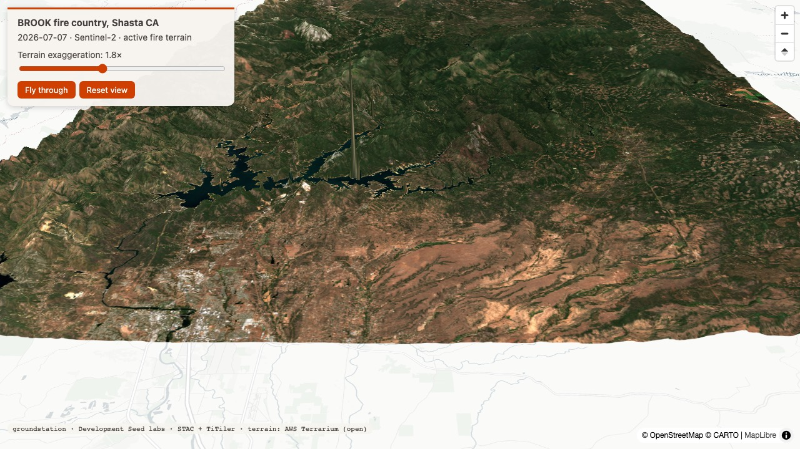
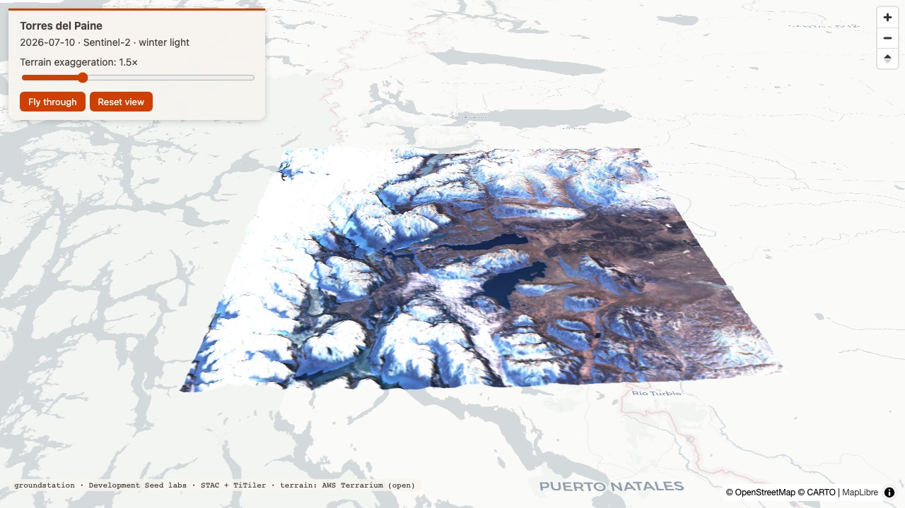
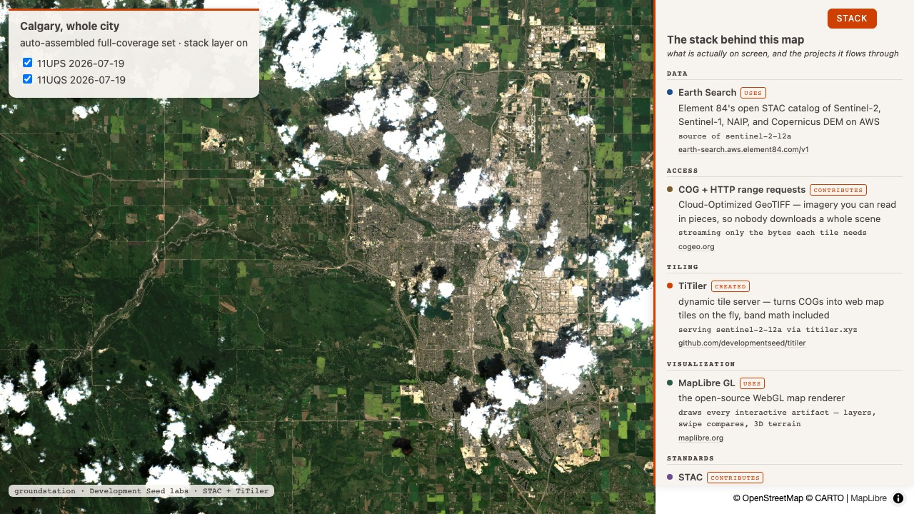
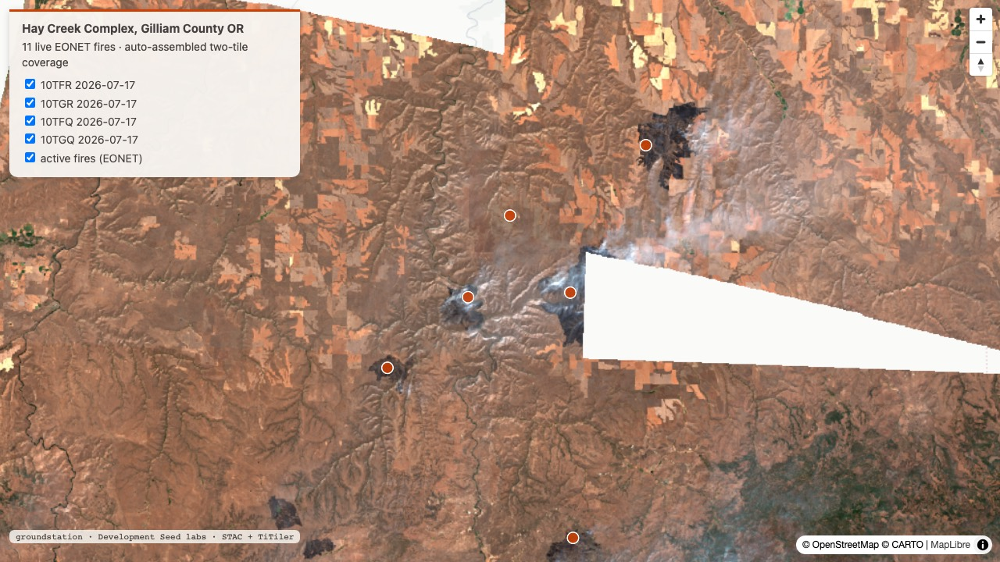
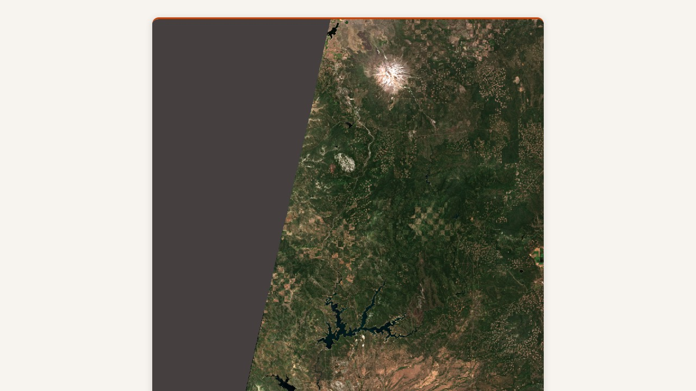
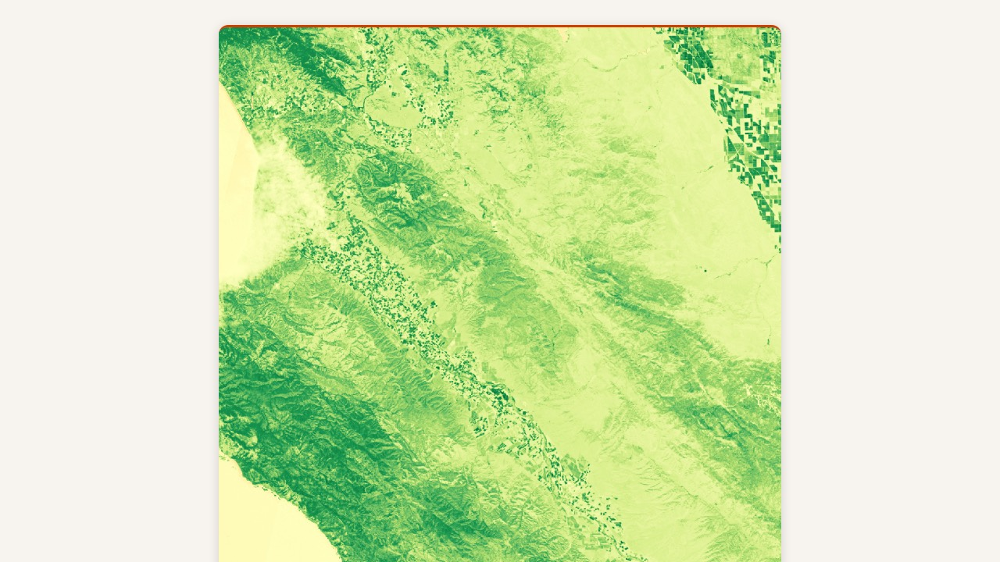
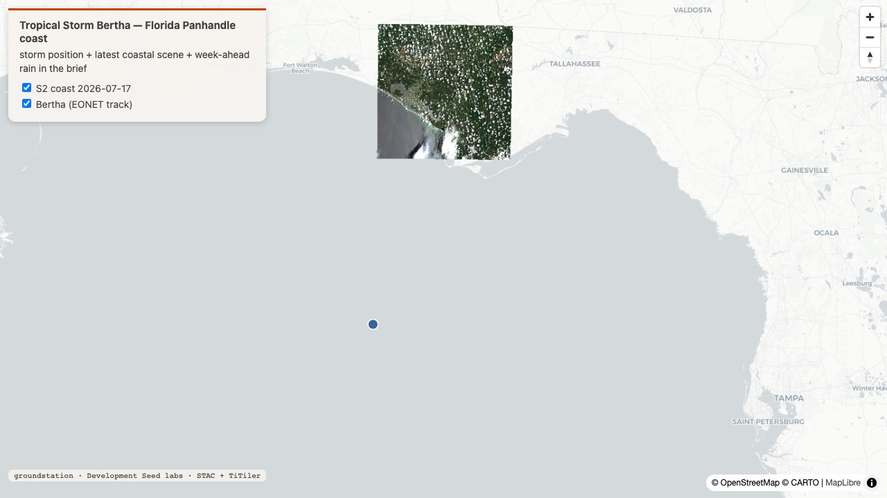
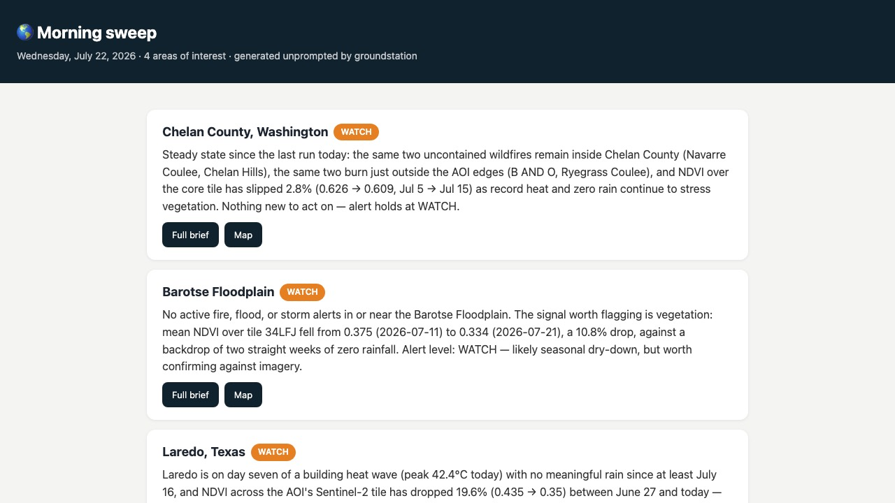

Round 1 — the new artifacts, pointed at this week's Earth
1
3d fly-through
fire country
Input
Show me the terrain around the BROOK fire in Shasta County in 3D — I want to understand what the crews are working in.
Output
Found the live EONET fire, picked a 0.01%-cloud July 7 scene at 98.2% coverage, and draped it over real terrain at 1.8× exaggeration. The canyon country east of the Sacramento Valley reads instantly — this is steep ground.
live 3D ↗render_map_3d, new today: live event → terrain answer in one call
2
3d fly-through
the reference case
Input
Give me a 3D fly-through of Torres del Paine.
Output
Southern-hemisphere winter light on the towers: 1.6% cloud, 96.5% coverage, July 10. Exaggeration slider, orbiting fly-through, reset view — all in a self-contained page with keyless terrain tiles that shares as-is.
live 3D ↗the page that used to be hand-written per request is now one tool call
3
auto-mosaic + stack
the regression case
Input
Show me Calgary. All of it. And show me what's behind the map.
Output
Calgary spans two UTM zones, so no single scene covers it. The search returned a same-day two-tile set at 100% union coverage without being asked twice, and the Stack toggle reveals the pipeline: Earth Search → COG range requests → TiTiler serving sentinel-2-l2a via titiler.xyz → MapLibre, each with a role badge and a kind-colored dot.
live map + stack ↗full_coverage_set and stack_layer, both new today, on one artifact
4
live events
wildfire season
Input
What's burning in north-central Oregon right now? Map every active fire over current imagery.
Output
Eleven live EONET fires — the Hay Creek Complex, Rowe Creek Complex, and nine more across Gilliam, Sherman, Wasco, and Wheeler counties — as clickable markers over a four-tile same-day mosaic (July 17, 100% union coverage). Weather context: 0.4mm of rain in the past week, 34.5°C ahead.
live map ↗Learning → the first pass used the single best scene — 63.8% coverage. The auto-mosaic turned that into a four-tile 100% answer, which is exactly the reprompt it was built to remove.
auto-mosaic scaling past two tiles on a real fire complex
5
postcard
share-ready
Input
Make me a postcard of the country the BROOK fire is burning in.
Output
One card: the July 7 scene as embedded pixels (nothing expires, nothing links out), place, date, caption, and the attribution block — Development Seed labs · STAC · TiTiler · sentinel-2-l2a via Element 84 Earth Search. Posting it anywhere stays a human call.
live postcard ↗Learning → an iceberg postcard (A76C, South Atlantic) came back empty — Sentinel-2 doesn't acquire open ocean. The honest zero beat a wrong artifact.
render_postcard, new today: durable, attributed, safe to share
Round 2 — analysis, synthesis, and the machinery that runs alone
6
index postcard
agriculture
Input
NDVI postcard of the Salinas Valley at the height of the growing season.
Output
The valley floor glows green against the dry July hills: NDVI mean 0.331, July 17, 3.3% cloud, rendered with the rdylgn colormap and captioned so the colors explain themselves. Index cards take the same expression machinery as index map layers.
live postcard ↗Learning → geocoding 'Salinas Valley' returned Salinas Valley State Prison — a 1km box. The region-scale sanity check in the skill caught it, and the AOI was widened to the actual valley.
band math + colormap on a shareable card
7
storm watch
gulf coast
Input
Where is Tropical Storm Bertha, and what does the week look like for the Florida Panhandle coast?
Output
Bertha's EONET position (July 21) mapped against the newest coastal scene, with the forward signal read honestly: winds already easing (51 → 18 km/h) and under 7mm of rain across the whole week ahead — this system is not the panhandle's problem this week. The best coastal scene covers 49.8% and the answer says so.
live map ↗events + forward weather + coverage honesty in one read
8
local model
runs on this laptop
Input
Brief me on Chelan County — but synthesize it on the local model, not the cloud.
Output
Ollama's qwen2.5-coder:7b wrote a coherent brief on this laptop: the two named wildfires, the NDVI slip, the heat. Then the eval gate failed it — dates and the NDVI number weren't cited to spec — which is the design working: local output gets the same quality bar as cloud output, and a sweep would have withheld it from Slack rather than posting it.Learning → the gate is what makes 'run it locally when possible' safe rather than aspirational. A failing local brief degrades to the claude path, then to the deterministic brief — the chain never returns nothing.
local synthesis + preflight + eval gate, all new today
9
scheduled sweep
nobody at the keyboard
Input
Run the morning fleet sweep, dry-run the Slack post.
Output
Four areas triaged in one run: Chelan WATCH (same two uncontained fires, NDVI 0.626 → 0.609 under record heat), Laredo WATCH (day seven of a 42.4°C heat wave, NDVI down 19.6%), Efate CALM. Chelan's brief opened with 'steady state since the last run today' — it remembers yesterday. The payload printed instead of posting.
sweep index ↗Learning → Barotse's summary read calm but carried a WATCH tag — the alert extraction takes the first CALM/WATCH/ACT match anywhere in the text. Now filed as the next fix, which is the field test doing its job.
lockfile, log, eval-gated posting, day-over-day memory
10
first run
the next machine
Input
bash scripts/doctor.sh — on a machine that just cloned this.
Output
The preflight walks the chain in the order it breaks — uv, server env, CLI, plugin wiring, endpoints, and new today: whether the copy Claude runs is current, printing the exact update command when it's behind. On a TTY it wears the new masthead and status colors; piped, it stays byte-clean plain text.Learning → plugin installs are cached per version, so six merged PRs deliver nothing until the version bumps and the user updates — the doctor now says which copy is running and how to move.
the whole first-run and upgrade path, hardened today
Reproduce
git clone https://github.com/dannybauman/groundstation && cd groundstation
bash scripts/doctor.sh # walks the setup chain, prints the fix
uv run evals/unit_checks.py # 59 offline checks
uv run evals/run_evals.py # live checks against real endpoints
uv run scripts/field_test.py docs/field-test-2026-07-22.cases.json # rebuild this page